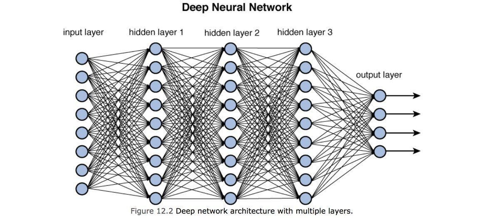
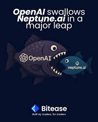

Нууц Код
Бичвэрт орсон нэр томъёнуудыг энгийнээр тайлбарлах нь
Хиймэл оюун ухаан нь хүн шиг сэтгэн бодохоор бүтээгдсэн систем юм. Энэ нь хүн шиг ажиллахын тулд хүний тархинаас санаа аван хийгдсэн neural network -д тулгуурлан ажилладаг [1].
Neural network: хүний тархины дотор байдаг шиг хоорондоо холбогдсон энгийн тархины эсийн дуураймал загварууд юм. Тэд мэдээллийг хүлээн авч, боловсруулж, цааш нь дамжуулах үүрэгтэй [1].
Neural network-н зургийг илүү сайн тайлбарлавал:
Оролтын үе (Input Layer): Гаднаас мэдээллийг (зураг, текст, тоо) хүлээн авах цэг.
Далд үеүд (Hidden Layers): Мэдээллийг боловсруулах гол "тархи" юм. Энд нейрон бүр өөрт ирсэн мэдээллүүдийг тодорхойлж өгч, ач холбогдлыг нь тодорхойлдог. Олон үе шаттай байх тусмаа систем илүү нарийн төвөгтэй мэдээллийг (жишээ нь, хүний царайг таних) ойлгох чадвартай болдог.
Гаралтын үе (Output Layer): Боловсруулсан мэдээллийн эцсийн үр дүн буюу таамаглалыг гаргана.
Машин сургалт (Machine Learning): Машин сургалт нь их хэмжээний өгөгдөл (Data) дундаас "хэв шинж" буюу зүй тогтлыг олж тогтоох замаар ирээдүйн үр дүнг таамаглах үйл явц юм. Хүн туршлагаасаа суралцдаг шиг компьютер өгөгдлөөс суралцдаг гэсэн үг [2].
1. Өнөөдрийн AI ямар чадвартай вэ?
Хиймэл оюун ухаан нь анхандаа янз бүрийн дүрснүүдийг хооронд нь ялган таних, төрөл бүрийн хэл дээр ойлгох ярилцах, шинэ мэдээллүүдэд суралцан дэвших зэргийг гол зорилгоо болгож байв [0].
Гэвч сүүлийн үед хүмүүс хиймэл оюун ухаанаар жинхэнэ мэт зураг, бичлэг хийлгэж, зүгээр л үйл явдлыг нь тайлбарлаад шинэ видео, website ч бүтээлгэдэг болсон. Түүнээс ч цаашлаад жинхэнэ хүнийхээс ялгагдахгүй хоолой гаргуулж, Шекиспиртэй өрсөлдөх хэмжээний яруу найргууд туурвигдаж, технологийн ертөнцөд өмнө нь маш их цаг авдаг байсан code-уудыг хэдхэн секундэд хийлгэх боломжтой болсон [0].
Хйимэл оюун ухааныг дурдах юм бол яалт ч үгүй өнөөгийн хэрэглээнд хамгийн их ашиглагдаж буй LLM дээр суурилсан чатботуудыг дурдах ёстой гэж би үзэж байна. Чатбот нь интернет дээр байх дижитал номын сангууд, Wikipedia болон нэвтэрхий толинууд, мэргэжлийн судалгааны ажилууд, веб хуудаснууд зэрэг бүх мэдээлэл дээр үндэслэн хариулт өгөх, reasoning хийж таамаглал дэвшүүлэх чадвартай. Мөн интернет дээрх мэдээллүүд, тэдэнд өгөгдөж буй санаа болон програмууд (алгоритм, архитектур) нь тэлэх тусам улам л ухамсартай болж хүчээ авсаар байна [3].
Тэд интернетийн мэдээллүүд дундаас хамгийн сүүлийн үеийн болон гол хэрэгтэй өгөгдөл, давтагдаж буй хэв маяг дээр тулгуурлан дараа юу болохыг хамгийн магадлал өндөртэйгөөр санал болгодог. Жишээ нь эсээ бичихдээ өмнөх token дээр тулгуурлан дараагийн дараагийн нэг үгэнд хамгийн их орсон үсгийн магадлал дээр тулгуурлан хүний хэл рүү орчуулан бий болгодог арай өөр үгээр тайлбарлах юм бол: Хамгийн өндөр магадлалтай хувилбаруудаас decoding strategy буюу оновчлолын аргаар утга санааны ойлгомжтой token-ийг сонгон өгүүлбэрийг үргэлжлүүлэн бичдэг [3].
LLM-үүд нь үнэндээ “ойлгодог” бус харин статистик дээр тулгуурлан хариултаа загварчилдаг. Тэдний хааяа худал мэдээлэл өгөх шалтгаан нь интернет дээр ч хомс баримттай, эсвэл хүмүүс цөөн асуудаг (Extremely rare) асуултуудад л буруу хариулах явдал. Гэсэн ч AI ашигладаг мэдээллийн сан өдөр бүр асар хурдтай өсөж буй тул ийм алдаа багассаар байгаа юм.[3]
Хүн шиг харилцах чадвар:
Одоо хөгжиж буй олон чатбот, виртуал туслахууд нь хүнтэй тогтмол харилцаж ажиллаж байна. Тухайлбал IBM AskHR зэрэг туслахууд Zoom уулзалтад тэмдэглэл хөтөлж, HR-ийн асуултад хариулж, chatbot хэлбэрээр зөвлөгөө өгдөг.
12-р сарын 3-нд Массачусетсийн Технологийн Их Сургууль (MIT) шинэ судалгаа нийтэлж, хиймэл оюуны технологи АНУ-ын хөдөлмөрийн зах зээлийн 11.7%, өөрөөр хэлбэл 1.2 их наяд ам.долларын цалин бүхий ажлуудыг орлох чадамжтай болохыг тогтоожээ [4].
MIT болон Oak Ridge Үндэсний Лабораторийн боловсруулсан Iceberg Index нэртэй симуляцийн загвар нь 151 сая ажилтныг тухайн хүний ур чадвар, гүйцэтгэдэг даалгавар, мэргэжил болон байршлаар нь “агент” болгон модельчилно. Энэхүү симуляци нь нийт 32,000 ур чадвар, 923 мэргэжил, 3,000 тойргийн өгөгдлийг хамардаг бөгөөд одоогийн AI системүүд аль ур чадварыг орлох боломжтойг үнэлсний үндсэн дээр дээрх дүгнэлтэд хүрсэн байна [4].
Хиймэл оюун ухааны сөрөг талууд
AI-ийн ашигтай талыг дурдаад үзвэл маш их, тэгвэл хиймэл оюун ухаанд ер нь сөрөг тал гэж байдаг болов уу гэсэн асуулт гарч ирнэ. Мэдээж сайны хажуугаар саар гэдгийн адил дэлхий нийтэд сайшаагдаж буй хиймэл оюун ухаан (AI)-д ч гэсэн сөрөг нөлөө, сул талууд бий [0].
Жишээлбэл, өмнө нь дурдьсантай адилаар бидний асуусан асуултад хиймэл оюун ухааны том хэлний моделиуд хариулт өгөхдөө, хэрэв бидний асууж буй асуулт хэт ховор, маш бага хүмүүс өмнө нь асууж байсан, эсвэл тухайн асуултын талаарх интернет дээрх мэдээлэл хэт хомс үед хиймэл оюун ухаанууд худал мэдээлэл өгөх, өөрөөр хэлбэл “худал ярих” хандлагатай болдог талаар батлагдсан судалгаанууд гарч буй юм [5].
Яг энэхүү асуудлын жишээг дурдвал,2023 онд АНУ-ын Нью-Йорк хотод нэгэн өмгөөлөгч шүүх хурал дээр ChatGPT ашиглан өмгөөллийн бичиг баримт бүрдүүлжээ. Гэтэл ChatGPT нь бодит амьдрал дээр хэзээ ч болж байгаагүй, огт байхгүй шүүхийн шийдвэрүүдийг зохиож, эш татсан байв. Үүнээс болж тухайн хуульч шүүхэд худал мэдээлэл өгсөн хэргээр шийтгүүлж, тусгай зөвшөөрлөө алдах эрсдэлд орсон юм. Энэ нь AI үнэн бодит байдлыг шалгадаггүй, зөвхөн үнэн мэт харагдах өгүүлбэрийг эвлүүлдэг болохыг баталсан тод жишээ болсон [5].
дээрх сул талыг шийдвэрлэхийн тулд дэлхийн AI салбарын томоохон тоглогчдын нэг болох OpenAI нь Neptune.ai компанийг энэ сарын 4-ний өдөр худалдаж авахаа зарлаад байна [6].
Neptune.ai нь хиймэл оюун ухааны (AI) загваруудыг сургах явцад хийгддэг туршилтуудыг хянах, хэмжигдэхүүнүүдийг хянах, алдааг илрүүлж засварлах хэрэгслүүдийг багтаасан платформ юм [6].
OpenAI уг Neptune.ai компанийг худалдан авснаар, тус платформын үйлчилгээг цаашид зөвхөн дотооддоо ашиглахаар болж, бусад байгууллагуудтай хийж байсан хамтын ажиллагаагаа зогсоохоор мэдэгдсэн байна. Үүнд өмнө нь Neptune.ai-ийн үйлчилгээг ашиглаж байсан Samsung Electronics, Roche зэрэг томоохон компаниуд ч мөн багтаж байна [6].
2. AI-г мэргэжлийн салбарт хэрхэн ашиглаж байна вэ?
Дэлхийн компаниуд AI-ийг өнөөгийн байдлаар ажлын бүтээмж, хурдыг нэмэгдүүлэх зорилгоор өргөн ашиглаж байна [0].
Жишээ нь судалгаагаар ажлаа хийхдээ AI ашигладаг ажилчид, ашигладаггүй ажилчидтай харьцуулахад нийт цагийн 5.4%-ийг хэмнэсэн үзүүлэлт гарчээ. Энэ нь зөвхөн ажлын 5 хоногт 2.2 цагийн зөрүү үзүүлж байна [7].
Salesforce компанийн захирал нь шинэ хиймэл оюуны стратегиа танилцуулаад, хиймэл оюун орлох боломжтой (компанийн нийт ажилчдын 30%) ажлыг цомхотгож, харин үлдсэн ажилчдын бүтээмжийг 60%-иар нэмэгдүүлсэн гэдгээ зарлаад байна [8].
Тэдний ашигаа сайжруулах, ажилчдыг орлож буй зүйл нь автомат системүүдийг бүрэн хариуцаж ажиллуулах. Жишээлбэл автомат салхин турбины хурдыг хүртэл холоос нисэн ирж буй шувуунд тохируулан өөрчлөх систем ашиглагдаж байна [8].
Томоохон AI компаниуд хөгжүүлэлтдээ салбарын мэргэжилтнүүдийн туслалцааг авсаар байгаа бөгөөд энэ нь AI-г салбар тус бүрийн онцлогийг тусган илүү найдвартай болгох боломж олгодог. Харин одоогийн байдлаар системийг хувь хүн өөрийн хяналт дор ажиллуулах нь илүү зөв үр дүн гаргаж байна [0].

Эрүүл мэндийн салбар: Виржиниа их сургуулийн судалгаагаар ChatGPT-ийг дангаар нь ашиглавал 92% зөв онош өгч байжээ. Эмч нар рентген зураг, MRI зэргийг уншихдаа AI-г ашиглан алдааг багасгаж байна. Гэхдээ судлаачид AI нь эмч нарын ажлыг орлох бус, харин нэмэлт туслах систем байх ёстой гэж зөвлөсөн [9].
Швед улсын "The Lancet Oncology" сэтгүүлд 2023 онд нийтлэгдсэн томоохон судалгаагаар, хиймэл оюун ухаан ашиглан 80,000 эмэгтэйд хөхний хорт хавдрын шинжилгээ (mammography) хийхэд AI нь хорт хавдрыг илрүүлэх хувь 20%-иар өндөр байсан бөгөөд эмч нарын ажлын ачааллыг 44%-иар бууруулсан байна. Энэ нь эмч нарыг орлох бус, харин тэднийг илүү нарийн, хүнд нөхцөлүүд дээр төвлөрөх боломжийг олгож байна [10].
Хууль эрх зүйн салбар: Хуулийн салбарт AI нь асар их бичиг баримтуудыг хооронд нь цэгцлэх, ялгах чадвараараа хэрэглэгдэж байна. OpenAI-ийн GPT-4 модель нь АНУ-ын Хуульчдын Нэгдсэн Шалгалт (Uniform Bar Exam)-ыг өгөхдөө нийт шалгуулагчдын шилдэг 10%-д багтах оноог авчээ. Харин түүний өмнөх загвар болох GPT-3.5 модель нь доод 10%-д л багтаж байсан юм. Энэхүү хөгжил нь технологийг мэргэжил бүрийн эрхмүүдтэй хамтран хөгжүүлсний ашиг тусыг харуулж байна [11].
Мэдээллийн технологийн салбар: Програмчлалын салбарт AI нь бүтээмж нэмэгдүүлэх, ажлыг хурдасгаж буй маш олон жишээнүүдийг харуулж байна. Жишээлбэл: Microsoft болон GitHub-ийн хийсэн хамтарсан судалгаагаар, "GitHub Copilot" буюу хиймэл оюун ухаант туслахыг ашигласан хүмүүсийн ажлын гүйцэтгэл энгийн үеэс 55%-иар хурдан байсан байна [12].
Инженер болон үйлдвэрчдийн салбар: AI нь бүтээгдэхүүн тоног төхөөрөмжийн хэлбэрийг хамгийн тохиромжтойгоор дизайн гаргаж байгаа юм. NASA саяхан сансрын дуран болон роботуудын эд ангиудыг зохион бүтээхдээ AI ашигласан бөгөөд үр дүнд нь жингийн хувьд 30% хөнгөн, бат бөх чанараар илүү эд ангиудыг гарган авчээ. Мөн энэ салбарт компаниуд predictive maintenance буюу төхөөрөмжүүдийн хэвийн ажиллагааг хянахад ашиглаж байна. Та бүхэнд Нэгэн жишээг дурдвал [13]:
Оюу Толгой компанийн анхны монгол CEO Мөнхсүх нь энэ сарын 4-нд өгсөн подкаст дээрээ хэлэхдээ [0]:
“Оюу Толгой бол дэлхийд өнөөгийн байдлаар хамгийн сайн тоноглогдсон уурхай, өөрөөр хэлбэл технологийн хөгжлөөрөө дэлхийд №1 түвшинд байна гэдгийг бардам хэлж чадна. Бидэнд 16,000 мэдээлэл цуглуулагч сенсор, тоног төхөөрөмжүүд байдаг. Тэднээс ирсэн бүх мэдээллийг нэгтгээд өнөөгийн байдлаар 5 петабайт хэмжээний мэдээллийн сан бий [14].
Бид энэхүү асар их датаг гадаадын томоохон компаниудтай хамтран AI-аар шийдэж байна. Нэг жишээ дурдахад, smart plant гэж AI программ нь бидэнд байгаа мэдээлэл дээр үндэслэн ямар нэгэн тоног төхөөрөмж эвдрэх гэж байгааг хэнээс ч өмнө тооцоолон гаргадаг. Ямарваа нэг тоног төхөөрөмжийг эвдрэхээс нь өмнө засаж чадвал маш их мөнгө хэмнэдэг. Зөвхөн энэ ганц программ дээр л гэхэд 12 сая долларын хэмнэлт хийсэн байдаг [14].
Уурхайн ажил явдгаараа явна, бид энэ хөгжлөөс авч үлдээд хэрэглэх хэрэгтэй. Манай залуучууд AI-ийн талаар сурч байна, бидэнд бас маш их газрын баялгийн нөөц байна, томоохон үйл ажиллагаа явуулдаг компаниуд ч олон бий (Оюу Толгой, Таван Толгой, Эрдэнэт). Хэрвээ бид үүн дээр дөрөөлж төр засаг, бусад компаниудтай хамтран ажиллавал үйлдвэрлэгч орон болоход маш их боломжтой санагдаж байна” хэмээн хэлсэн байдаг [14].
3. Монгол болон дэлхийд AI ямар түвшинд байна вэ?
Монгол Улсын Засгийн газар 2026–2030 онд AI хөгжүүлэх үндэсний стратеги боловсруулсан бөгөөд уул уурхай, санхүү-эдийн засаг, эрүүл мэнд, боловсрол зэрэг салбарт AI шийдлүүдийг нэвтрүүлэх зорилго тавиад байна [15].
Энэ намраас эхлэн Хятад, Сингапур, Эстони зэрэг улсууд албан ёсоор хиймэл оюун ухааныг өөрийн боловсролын системд нэвтрүүлж эхэлсэн. 1-р ангиас нь роботтой тоглох, алгоритмын суурь ойлголт заах хөтөлбөр хэрэгжиж байна [15].
Монгол Улсад ч гэсэн хиймэл оюун ухааны томоохон хэлний моделиуд бий боловч тэднийг хөгжүүлэхэд дэд бүтцийн асуудал (жишээ нь: эрчим хүч, GPU) том сорилт болж байна. Egune, Mergen Chat зэрэг хиймэл оюун ухаанууд дэлхийтэй өрсөлдөхийн тулд илүү хүчтэй систем, GPU нөөц шаардлагатай. Энэ нь зөвхөн хувийн компанийн хүчин чадлаар хангагдахгүй учир төр, хөрөнгө оруулагчдын оролцоо нэн шаардлагатай байгааг мэргэжилтнүүд онцолж байна [15].
Үүнээс ч гадна Монгол Улс дэлхийтэй хөл нийлүүлэхээр AI чиглэлийн 500 багшийг бэлтгээд байна. Тэд Кембриджийн их сургуулийн професоруудаас суралцаж, бүх шатны хүмүүс инженерчлэлийн үндэс бүхий AI мэдлэгийг заах сургалтад хамрагдсан [16].
Эдгээр багш нар ойрын хугацаанд ЕБС-ийн 10,000 гаруй сурагчдад AI-ийн хичээл заах зорилготой. Мөн дараагийн 5 жилд 2,250 шинэ багш бэлтгэх зорилт тавигдаад байна [16].
Үүгээр ч зогсохгүй Боловсрол, шинжлэх ухааны сайд П. Наранбаяр уг хөтөлбөрийг цаашид багшийн кредит олгох модуль сургалт болгон хөгжүүлэхээ мэдэгдсэн [16].
AI өгөгдөл боловсруулах хурд ихэссээр байгаад бид хэзээ ч үйлдлүүдийг хийх агшинд ёс зүйн хувьд оновчтой эсэхийг нэг бүрчлэн шалгах боломжгүй болж байна. Жишээ нь дайны үед AI нэг хот дээр бөмбөг хаяад хэдэн мянган хүний амийг хохирооход хэн хариуцлага хүлээх вэ? Аль хэдийн байгаа жишээ бол Израйлын армийн ашиглаж буй 'Gospel', 'Lavender' болон 'Where’s Daddy?' гэх мэт хиймэл оюун ухааны системүүдийн тухай шуугиан юм. Шинжээчдийн үзэж байгаагаар эдгээр системүүд нь хүнээс хамааралгүйгээр бай сонголт хийж, хүний хяналт суларснаас болж Газын зурвас дахь энгийн иргэдийн амь нас, орон сууцны сүйрэл асар их хэмжээнд хүрэхэд гол нөлөө үзүүлсэн байна. Тухайлбал, 10-р сарын 7-ноос хойших эхний 6 долоо хоногийн дотор гарсан 15,000 гаруй хүний аминд хүрсэн халдлагуудын тал орчим хувь нь ийм төрлийн AI системд тулгуурлан бай сонгох үед болсон байгаа юм [17].
Энэ асуудлыг шийдэхийн тулд AI кодонд нь ёс зүйг оруулж ёс зүйн хүрээнд шийдвэр гаргаж болох ч нөгөө талаас тухайн нөхцөлд ямар шийдвэр гаргах дээр сургаж болно. Хохирол гарахгүй байх боломжгүй, яг үнэнийг хэлэхэд ургаа мод ч унахдаа хохирол заналхийлнэ гэдэг шиг технологийн хөгжилд ч тодорхой эрсдэл бий. Гэсэн хэдий ч бидний зорилго бол эрсдэлийг бүрэн устгах бус, харин хиймэл оюун ухаан өөрөө болзошгүй аюулыг (potential harm) таньж, хянах чадвартай болох, улмаар эцсийн шийдвэрийг хүн гаргах 'хяналтын механизм'-ыг бүрдүүлэхэд оршино [18].
Өмнөх хэсэгт бид асуудлыг гаргаж ирсэн бол, одоо Үүнийг яаж шийдэх вэ? гэдэгт шинжлэх ухааны хариулт өгөх хэрэгтэй [0].
Хиймэл оюун ухаанд ёс зүйг ойлгуулахад дараах 2 аргыг түгээмэл ашиглана.
Эхний арга ерөнхийдөө нь ёс зүйн онол, дүрэм зарчмуудыг алгоритмд шууд програмчилж өгөх зарчмаар үйлдлийг хязгаарлах юм. Өөрөөр хэлбэл “Хүнд хохирол учруулж болохгүй” гэх мэт тодорхой дүрмүүдийг урьдчилан зааж өгнө. Хэдийгээр бодит амьдрал дээрх бүх ээдрээтэй нөхцөл байдлыг цөөн хэдэн дүрмээр шийдэх нь учир дутагдалтай ч, тодорхой хүрээний ажлуудад энэ нь хамгийн найдвартай хяналтын механизм болно [18].
Өөр нэг арга нь бэлэн код оруулахаас илүүтэйгээр, тодорхой нөхцөл, хувилбарууд дээр “сургах” арга юм. Машин сургалт болон нейрон сүлжээний тусламжтайгаар систем өөрөө алдаа, онооноосоо суралцаж, тухайн нөхцөл байдалд тохирсон уян хатан шийдвэр гаргах чадвартай болдог. Гэвч энэ аргын сул тал нь систем яг ямар логикоор тухайн шийдвэрийг гаргасныг хүн бүрэн тайлбарлах, урьдчилан тааварлахад хүндрэлтэй байдагт оршино [18].
Гэвч практикт ээдрээтэй, нарийн асуудлыг шийдэхэд “дүрэм” эсвэл “сурсан мэдээлэл нь дангаараа хамгийн үр дүнтэй байж чадахгүй. Аль аль нь өөрийн гэсэн сул болон давуу талтай. Тиймээс дээрх хоёр аргын “холимог”-ийг ашигладаг. Энэ нь яг л хүүхэд өсөж торнихдоо нийгмийн тодорхой дүрмүүдэд суралцахын зэрэгцээ нийгмийн харилцаанд орж, юу зөв, юу буруу болохыг өөрөө олж мэдэж байгаатай адил юм. Энэ нь өгөгдөл боловсруулах математик алгоритм neural networks болон логик дүрмийн системийг уялдуулах замаар илүү хариуцлагатай, найдвартай "Хиймэл ёс зүйт төлөөлөгч"-ийг бүтээх үндэс болох юм [18].
Манай AI(LLM) ийн талаарх бичвэр 3н цувралтай бөгөөл хйимэл оюун ухааны ёс суртахуун этикийн тал, эрчим хүчний зохицуулга, улс орнуудын хоорондох монопол хэлбэрээр хэрхэн ашиглагдаж буйг мэдэж судлахыг хүсвэл дараагийн дугаарыг маань уншаарай.
Бичвэрийг бичсэн: Б.Бат-Ирээдүй
Судалгааг: Б.Бат-Ирээдүй, М.Мөнх-Оргил
Эх сурвалж
0. Гэдэг нь бичээчийн найруулга болно
- https://www.nasa.gov/what-is-artificial-intelligence/
- https://cloud.google.com/ai/llms
- https://arxiv.org/abs/1706.03762
- https://www.cnbc.com/2025/11/26/mit-study-finds-ai-can-already-replace-11point7percent-of-us-workforce.html
- https://www.nytimes.com/2023/05/27/nyregion/avianca-airline-lawsuit-chatgpt.html
- https://openai.com/index/openai-to-acquire-neptune/
- https://www.stlouisfed.org/on-the-economy/2025/feb/impact-generative-ai-work-productivity
- https://www.salesforce.com/news/stories/agentforce-it-service-announcement/
- https://news.med.virginia.edu/research/does-chat-gpt-improve-doctors-diagnoses-study-puts-it-to-the-test/
- https://www.thelancet.com/journals/lanonc/article/PIIS1470-2045(23)00298-X/abstract
- https://arxiv.org/pdf/2303.08774
- https://github.blog/news-insights/research/research-quantifying-github-copilots-impact-on-developer-productivity-and-happiness/
- https://www.nasa.gov/technology/nasa-turns-to-ai-to-design-mission-hardware/
- https://www.youtube.com/watch?v=WvIbKT2Xdqo&t=6427s эхлэх цаг 1:35:12
- https://www.youtube.com/watch?v=w3EL0QiCvFw
- https://www.ai-academy.asia/en/blog/41
- https://www.ohchr.org/en/press-releases/2024/04/gaza-un-experts-deplore-use-purported-ai-commit-domicide-gaza-call, https://www.democracynow.org/2024/4/5/israel_ai
- DOI 10.1007/s10676-006-0004-4